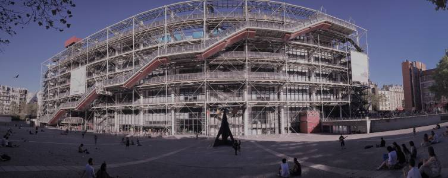
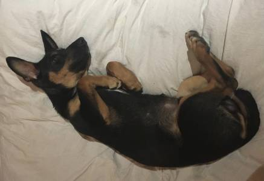

Sobre mí
Delineante y futuro arquitecto que busca un nuevo enfoque en el mundillo de la
programación.
Alguno de mis hoobies son los siguientes:
- Soy un friki del diseño y la impresión en 3D. Este es uno de los diseños que he llegado a realizar:
- También me gusta la fotografía y el dibujo tradicional, sobre todo a nivel urbanistico:

- Por último y no menos importante, os presento a mi fiel compañero perruno: Awki.
>
